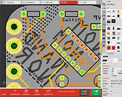
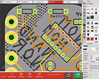

The Nom Nom Nand Nor (NNNN) board can be soldered to make an ok sounding synth. The board was designed in response to a collective of artists making electronic music in Bristol, and here I show some of the development of that. It is designed to be used with etextiles embedded in soft objects (such as stuffed toys).
The board has triggered a few things happing - such as a weekly hack meet-up, and a new collective PRRRRRT!
 
